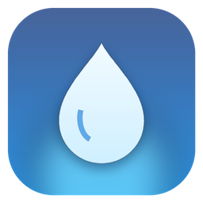

Click or press any key to unlock
Makes Aquaris's colours warmer, which is easier on your eyes at night.
Over the RAM limit, the app you used longest ago naps. Over the CPU limit, apps you aren't using are slowed down until you go back to them.